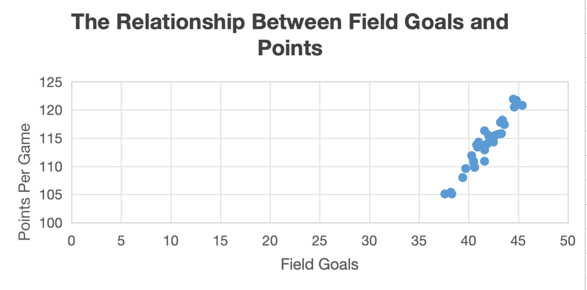
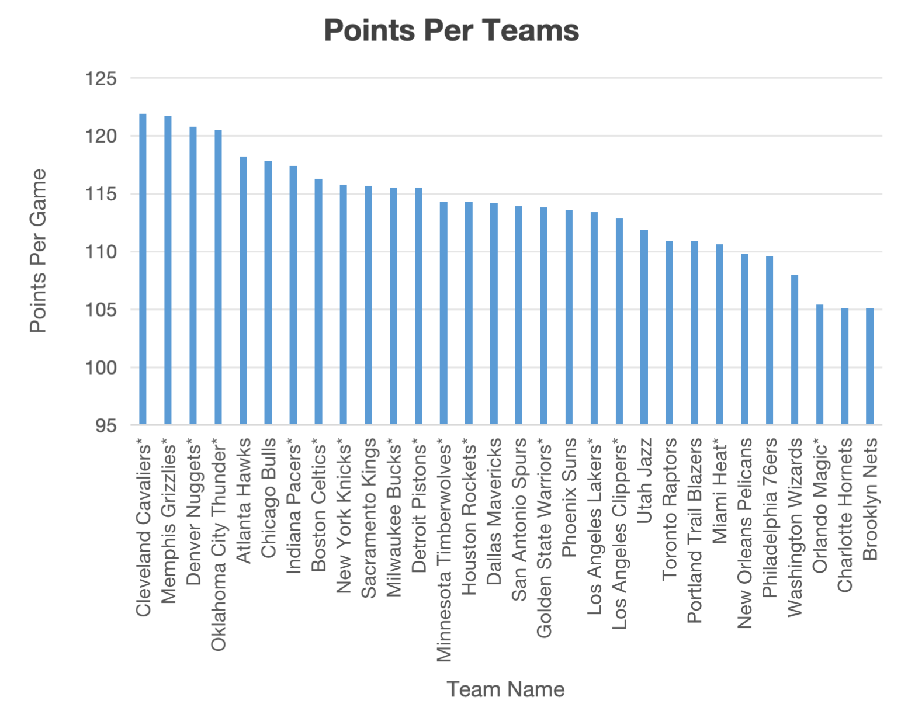
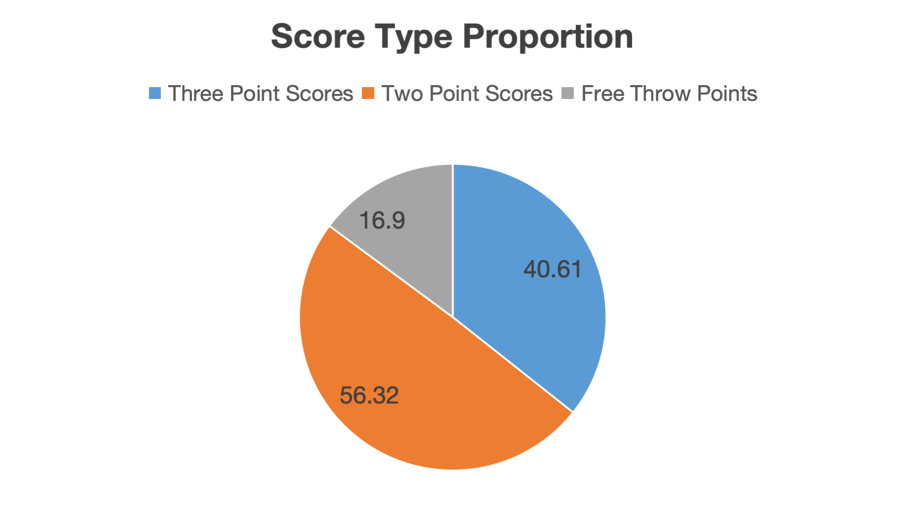

Chart 1
This is a scatter plot chart that shows the relationship between field goals per game and the total points per game
From the chart, we can see that there is a positive relationship between field goals per game and the total points per game. The more the team shoot, the more points they will score.
Chart 2
This is a bar chart that shows the relationship between the team and the total points per game
From the chart, we can see that teams like Cleveland Cavaliers and Memphis Grizzlies score more points per game than other teams.
Chart 3
This is a pie chart that shows the average score type of the teams in the league
From the chart, we can see that the 2-points balls are still more than 50% of the total score, while 3-points balls are a little bit less, and free throws are the least.
